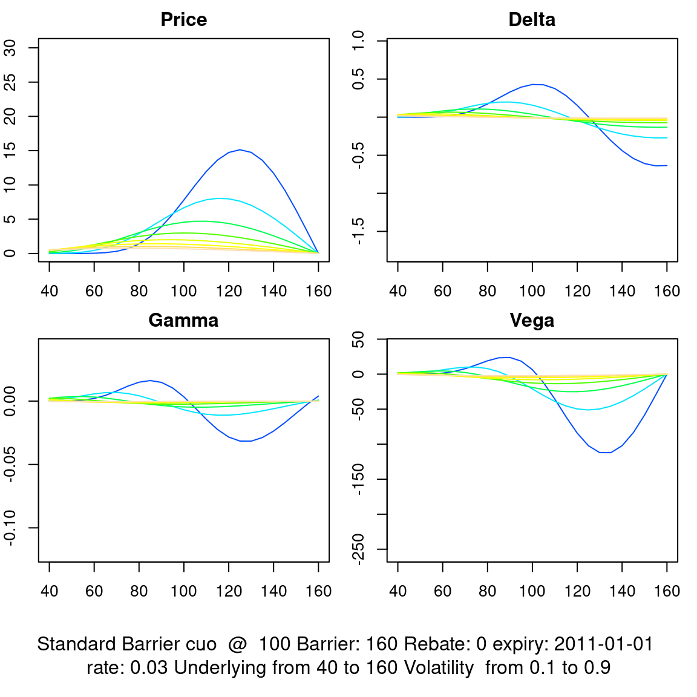

11 Price and Greeks in the Black-Scholes Model
## Loading required package: timeDate## Loading required package: timeSeries## Loading required package: fBasics## Loading required package: lubridate## Loading required package: timechange##
## Attaching package: 'lubridate'## The following objects are masked from 'package:base':
##
## date, intersect, setdiff, union## Loading required package: Hmisc## Loading required package: lattice## Loading required package: survival## Loading required package: Formula## Loading required package: ggplot2##
## Attaching package: 'Hmisc'## The following objects are masked from 'package:base':
##
## format.pval, units## Loading required package: xtable##
## Attaching package: 'xtable'## The following objects are masked from 'package:Hmisc':
##
## label, label<-## The following object is masked from 'package:timeSeries':
##
## align## The following object is masked from 'package:timeDate':
##
## align## Loading required package: empfin## Loading required package: fImport## Loading required package: RCurlIn this chapter, we consider the price and risk indicators of several types of options. We are particularly interested in the higher order risk indicators, such as the Gamma. We will see later that this indicator has a major impact on our ability to dynamically hedge such instruments.
11.1 Solving the Pricing Equation
A fairly rigorous derivation of the Black-Scholes equation can be obtained without using the tools of stochastic calculus. Recall from the previous section that under the risk-neutral probability, the discounted value is a martingale:
\[S_0 = e^{-rT} E^Q(S_T)\]
where \(S_T\) is a log-normal variable that follows the process:
\[S_T = S_0 e^{(r-\frac{\sigma^2}{2})T + \sigma \sqrt{T}Y}\]
with \(Y ~ N(0,1)\). The value of any derivative is the discounted expected payoff. For a call option, we have:
\[\begin{aligned} c(S, 0) &=& e^{-rT} E^Q [ \left( S_0 e^{(r-\frac{\sigma^2}{2})T + \sigma \sqrt{T}Y}-K \right)^+ ] \\ &=& \frac{e^{-rT}}{\sqrt{2\pi}} \int_{-\infty}^{\infty} \left( S_0 e^{(r-\frac{\sigma^2}{2})T + \sigma \sqrt{T}Y}-K \right)^+ e^{-x^2/2} dx\end{aligned}\]
Now compute the bounds of integration:
\[\begin{aligned} & & S_0 e^{(r-\frac{\sigma^2}{2})T + \sigma \sqrt{T}x} \geq K \\ & <=> & e^{\sigma \sqrt{T} x} \geq \frac{K}{S_0} e^{-(r-\frac{\sigma^2}{2})T} \\ & <=> & x \geq \frac{1}{\sigma \sqrt{T}} \left( \ln(\frac{K}{S_0}) -(r-\frac{\sigma^2}{2})T \right)\end{aligned}\]
Let
\[T_1 = \frac{1}{\sigma \sqrt{T}} \left( \ln(\frac{K}{S_0}) -(r-\frac{\sigma^2}{2})T \right)\]
\[\begin{aligned} c(S, 0) &=& \frac{e^{-rT}}{\sqrt{2\pi}} \int_{T_1}^{\infty} \left( S_0 e^{(r-\frac{\sigma^2}{2})T + \sigma \sqrt{T}x}-K \right) e^{-x^2/2} dx \\ &=& \frac{e^{-rT}}{\sqrt{2\pi}} \int_{T_1}^{\infty} S_0 e^{(r-\frac{\sigma^2}{2})T + \sigma \sqrt{T}x} e^{-x^2/2} dx - K \frac{e^{-rT}}{\sqrt{2\pi}} \int_{T_1}^{\infty} e^{-x^2/2} dx \\ &=& A - B\end{aligned}\]
\[B = K e^{-rT} (1-N(T_1))\]
Apply the change of variable \(y = x-\sigma \sqrt{T}\) to get
\[\begin{aligned} A &=& \frac{e^{-rT}}{\sqrt{2\pi}} \int_{T_1-\sigma \sqrt{T}}^{\infty} S_0 e^{-y^2/2} dy \\ &=& S_0 (1-N(T_1 - \sigma \sqrt{T}))\end{aligned}\]
where \(N(x)\) is the cumulative normal distribution. Using the identity \(N(x)+N(-x)=1\), one gets the Black-Scholes formula in its standard form.
\[C_{\mbox{BS}}(S,0) = S_0N(d_1) - Ke^{-rT}N(d_2) \, \tag{11.1}\]
with
\[\begin{aligned} d_1 &=& \frac{\ln(S/K) + (r + \sigma^2/2)T}{\sigma\sqrt{T}} \\ d_2 &=& d_1 - \sigma\sqrt{T}.\end{aligned}\]
The value of the put can be obtained from the call-put parity relationships.
In the following discussion about the management of market risk of option portfolios, we use three risk indicators, also known as greeks:
Delta, which is the derivative of price with respect to the price of the underlying asset,
Gamma, which is the second derivative of price with respect to spot, and
Vega, which is the derivative of price with respect to the volatility.
See, for example Hull \[[@Hull1997]\] for a detailed discussion of these risk indicators.
11.2 An Option Dashboard
We start the chapter by constructing a “dashboard” which illustrates the properties of various types of European options. These displays are inspired by similar figures developped by D. Eddelbuettel \[[@Eddelbuettela]\] for the RQuantLib project. The class provides a generic way of writing such function.
The dashboard has four panels, which display the price, delta, gamma and vega of the option under consideration. Each panel has a family of curves varying in color from yellow to green to blue. This family of curves pictures the evolution of the price and of the greeks for varying levels of volatility. The yellow curves corresponding to a high volatility conditions, and at the other end, the blue line corresponding to low volatility conditions.
OptionDashBoard <- function(inst, base.env, dtCalc,
und.seq, vol.seq, trace = FALSE) {
sce <- t(as.matrix(und.seq))
underlying <- inst@params$underlying
setData(base.env, underlying, "Price", dtCalc,
sce)
p <- matrix(nrow = length(und.seq), ncol = length(vol.seq))
d <- matrix(nrow = length(und.seq), ncol = length(vol.seq))
g <- matrix(nrow = length(und.seq), ncol = length(vol.seq))
v <- matrix(nrow = length(und.seq), ncol = length(vol.seq))
for (i in seq_along(vol.seq)) {
setData(base.env, underlying, "ATMVol",
dtCalc, vol.seq[i])
p[, i] <- getValue(inst, "Price", dtCalc,
base.env)
d[, i] <- getValue(inst, "Delta", dtCalc,
base.env)
g[, i] <- getValue(inst, "Gamma", dtCalc,
base.env)
v[, i] <- getValue(inst, "Vega", dtCalc,
base.env)
}
if (trace) {
print("price")
print(p)
}
old.par <- par(no.readonly = TRUE)
par(mfrow = c(2, 2), oma = c(5, 0, 0, 0),
mar = c(2, 2, 2, 1))
# Price
plot(und.seq, p[, 1], type = "n", main = "Price",
xlab = "", ylab = "")
topocol <- topo.colors(length(vol.seq))
for (i in 2:length(vol.seq)) lines(und.seq,
p[, i], col = topocol[i])
# Delta
plot(und.seq, d[, 1], type = "n", main = "Delta",
xlab = "", ylab = "")
for (i in 2:length(vol.seq)) lines(und.seq,
d[, i], col = topocol[i])
# Gamma
plot(und.seq, g[, 1], type = "n", main = "Gamma",
xlab = "", ylab = "")
for (i in 2:length(vol.seq)) lines(und.seq,
g[, i], col = topocol[i])
# Vega
plot(und.seq, v[, 1], type = "n", main = "Vega",
xlab = "", ylab = "")
for (i in 2:length(vol.seq)) lines(und.seq,
v[, i], col = topocol[i])
mtext(text = paste(inst@desc, "\nrate: 0.03",
"Underlying from", und.seq[1], "to", und.seq[length(und.seq)],
"Volatility from", vol.seq[1], "to",
vol.seq[length(vol.seq)]), side = 1, font = 1,
outer = TRUE, line = 3)
par(old.par)
}11.2.1 Vanilla Option
European calls and puts are called “vanilla” in the banking industry, presumably due to their simple structures. The payoff of a vanilla option (call) is:
\[(S_T-K)^+\] and its value (call) is given by: \[e^{-rT} \left(F_T N(d_1)-K N(d_2)\right)\]
where \(F_T\) is the forward value of the underlying asset at \(T\).
For at-the-money options, a simple approximation to the Black-Scholes price is: \[V = e^{-rT} F_T \frac{\sigma\sqrt{T}}{\sqrt{2\pi}}\]
The formula above makes use of the approximation:
\[N(x) \approx \frac{1}{2} + \frac{x}{\sqrt{2\pi}} + O(x^2)\]
The evolution of price and greeks as a function of the underlying asset and volatility is shown in figure \[fig:eu-call\]. The graph is obtained with the following script:
dtExpiry <- myDate("01jan2011")
underlying <- "IBM"
Strike <- 100
K <- 1
b <- fInstrumentFactory("vanilla", quantity = 1,
params = list(cp = "c", strike = Strike, dtExpiry = dtExpiry,
underlying = underlying, discountRef = "USD.LIBOR",
trace = FALSE))
# define two vectors for the underlying and
# the volatility all other market data is
# fixed
und.seq <- seq(40, 160, by = 5)
vol.seq <- seq(0.1, 0.9, by = 0.1)
base.env <- DataProvider()
dtCalc <- myDate("01jan2010")
setData(base.env, underlying, "DivYield", dtCalc,
0.02)
setData(base.env, "USD.LIBOR", "Yield", dtCalc,
0.02)
OptionDashBoard(b, base.env, dtCalc, und.seq,
vol.seq)
Several observations are worth mentioning:
In high volatility conditions, the delta is almost linear, but takes on more pronounced a “S” shape as volatility decrease.
The gamma is always positive, reflecting the uniformly convex shape of the premium function.
The vega is also always positive: an increase in volatility always results in an increase in premium.
We will see shortly that these last two features have important implications for risk management.
11.2.2 Binary Option
A binary option pays a fixed amount if the underlying asset is in the money at expiry.
The payoff is: \[1_{S_T>K}\]
Recall that \(N(d_2)\) is the risk-neutral probability that \(S_T>K\) at expiry. The value of a binary call is therefore:
\[e^{-rT} N(d_2)\]
Alternatively, observe that a binary option struck at \(K\) can be replicated by a very tight call spread: \[C_{\mbox{B}}(K) = \lim_{h \rightarrow 0} \frac{C_{\mbox{V}} (K-h) - C_{\mbox{V}} (K-h)}{h}\]
where \(C_{\mbox{B}}(K)\) is the price of a binary call struk at \(K\)and \(C_{\mbox{V}}(K)\) the price of a vanilla call. The value of a binary call is the negative of the derivative of a vanilla call price with respect to strike.
\[\begin{aligned} C_{\mbox{B}}(K) &=& -\frac{\partial C_{\mbox{V}} (K)}{\partial K} \\ &=& e^{-rT} N(d_2)\end{aligned}\]
Recall that the derivative of a vanilla call price with respect to spot is \(N(d_1)\), therefore, the shape of the binary price function is similar to the shape of the delta of a European option, and the shape of the delta of a binary call is similar to the shape of the gamma of a vanilla option.
As a consequence, the gamma of a binary option changes sign, and so does the vega. Options with gamma that changes sign are costly to hedge, as simulations will demonstrate in section.
The dashboard in Figure \[fig:eu-bin-call\] is generated with the following script:
dtExpiry <- myDate("01jan2011")
underlying <- "IBM"
Strike <- 100
K <- 1
bi <- fInstrumentFactory("binary", quantity = 1,
params = list(cp = "c", strike = Strike, dtExpiry = dtExpiry,
underlying = underlying, discountRef = "USD.LIBOR",
trace = FALSE))
# define two vectors for the underlying and
# the volatility all other market data is
# fixed
und.seq <- seq(40, 160, by = 5)
vol.seq <- seq(0.1, 0.9, by = 0.1)
base.env <- DataProvider()
dtCalc <- myDate("01jan2010")
setData(base.env, underlying, "DivYield", dtCalc,
0.02)
setData(base.env, "USD.LIBOR", "Yield", dtCalc,
0.02)
OptionDashBoard(bi, base.env, dtCalc, und.seq,
vol.seq)11.2.3 Barrier Option
There is a large variety of barrier options. Haug \[[@Haug2006]\] provides a long list of pricing formulae for standard and complex barrier payoffs. As an illustration we consider here the “up and out” call, which is a regular European call that is canceled if the underlying asset breaches an upper barrier before expiry.
Payoff:
\[(S_T-K)^+1_{\max_t S_t < B}\]
This instruments introduces a new twist in the option landscape, since this call option can have a negative delta. As for binary options, the gamma can switch sign, and finally, observe the magnitude of the vega: the maximum value, in absolute term, is twice as large as for european options of comparable strike and maturity.
The dashboard in Figure \[fig:eu-ba-call\] is generated with the following script:
dtExpiry <- myDate("01jan2011")
underlying <- "IBM"
Strike <- 100
barrier <- 160
ba <- fInstrumentFactory("standardbarrier", quantity = 1,
params = list(cp = "cuo", strike = Strike,
barrier = barrier, rebate = 0, dtExpiry = dtExpiry,
underlying = underlying, discountRef = "USD.LIBOR",
trace = FALSE))
# define two vectors for the underlying and
# the volatility all other market data is
# fixed
und.seq <- seq(40, 160, by = 5)
vol.seq <- seq(0.1, 0.9, by = 0.1)
base.env <- DataProvider()
dtCalc <- myDate("01jan2010")
setData(base.env, underlying, "DivYield", dtCalc,
0.02)
setData(base.env, "USD.LIBOR", "Yield", dtCalc,
0.02)
OptionDashBoard(ba, base.env, dtCalc, und.seq,
vol.seq)
11.2.4 Asian Option
An asian option is an option on the average value of the underlying asset, computed over a period of time prior to expiry. This type is very popular in commodities markets, because it captures the price risk on a market participant that produces or consumes the asset at a steady rate over time.
In spite of its apparent complexity, asian options are in fact fairly easy to manage. One can think of an Asian option as a regular European option, with an underlying asset that is the average value. The value of an asian call is lower than the value of a comparable european vanilla call, since the volatility of an average is lower than the volatility of the price at expiry. For the same reason, the vega of an Asian option is about half of the vega of its European conterpart.
The dashboard in Figure \[fig:eu-as-call\] is generated with the following script:
dtExpiry <- myDate("01jan2011")
underlying <- "IBM"
Strike <- 100
ba <- fInstrumentFactory("asian", quantity = 1,
params = list(cp = "c", strike = Strike, dtExpiry = dtExpiry,
dtStart = dtCalc, dtEnd = dtExpiry, underlying = underlying,
discountRef = "USD.LIBOR", trace = FALSE))
# define two vectors for the underlying and
# the volatility all other market data is
# fixed
und.seq <- seq(40, 160, by = 5)
vol.seq <- seq(0.1, 0.9, by = 0.1)
base.env <- DataProvider()
dtCalc <- myDate("01jan2010")
setData(base.env, underlying, "DivYield", dtCalc,
0.02)
setData(base.env, "USD.LIBOR", "Yield", dtCalc,
0.02)
OptionDashBoard(ba, base.env, dtCalc, und.seq,
vol.seq, TRUE)## [1] "price"
## [,1] [,2] [,3] [,4] [,5]
## [1,] 0.000000e+00 2.797267e-15 1.929820e-07 1.676725e-04 0.004835215
## [2,] 0.000000e+00 5.554081e-12 7.049604e-06 1.414773e-03 0.020537644
## [3,] 0.000000e+00 2.457959e-09 1.228438e-04 7.848277e-03 0.066480524
## [4,] 0.000000e+00 3.085715e-07 1.221308e-03 3.167283e-02 0.175041555
## [5,] 0.000000e+00 1.458436e-05 7.863270e-03 9.988736e-02 0.392541985
## [6,] 1.093153e-13 3.192058e-04 3.596464e-02 2.593626e-01 0.775341243
## [7,] 8.008437e-10 3.780066e-03 1.252489e-01 5.765250e-01 1.383044255
## [8,] 7.712348e-07 2.730738e-02 3.502590e-01 1.130251e+00 2.270945048
## [9,] 1.429466e-04 1.322786e-01 8.198778e-01 1.999979e+00 3.483681688
## [10,] 6.907294e-03 4.636100e-01 1.660142e+00 3.253068e+00 5.051276086
## [11,] 1.125566e-01 1.251008e+00 2.985769e+00 4.935257e+00 6.987832736
## [12,] 7.770427e-01 2.736296e+00 4.873107e+00 7.066310e+00 9.292515837
## [13,] 2.802681e+00 5.064821e+00 7.345783e+00 9.640811e+00 11.951865448
## [14,] 6.409656e+00 8.224511e+00 1.037587e+01 1.263239e+01 14.942892256
## [15,] 1.096881e+01 1.207104e+01 1.389739e+01 1.600031e+01 18.236455170
## [16,] 1.584710e+01 1.640467e+01 1.782418e+01 1.969573e+01 21.799974968
## [17,] 2.078882e+01 2.104062e+01 2.206648e+01 2.366749e+01 25.599967634
## [18,] 2.573846e+01 2.584361e+01 2.654238e+01 2.786625e+01 29.603825049
## [19,] 3.068876e+01 3.072996e+01 3.118381e+01 3.224716e+01 33.781014330
## [20,] 3.563909e+01 3.565435e+01 3.593816e+01 3.677130e+01 38.103811303
## [21,] 4.058942e+01 4.059479e+01 4.076701e+01 4.140610e+01 42.547654136
## [22,] 4.553975e+01 4.554156e+01 4.564358e+01 4.612506e+01 47.091214686
## [23,] 5.049008e+01 5.049067e+01 5.054994e+01 5.090718e+01 51.716277174
## [24,] 5.544041e+01 5.544060e+01 5.547450e+01 5.573615e+01 56.407497967
## [25,] 6.039075e+01 6.039080e+01 6.040994e+01 6.059951e+01 61.152102719
## [,6] [,7] [,8] [,9]
## [1,] 0.03480616 0.1267117 0.3156147 0.6239206
## [2,] 0.10121228 0.2918643 0.6227507 1.1041871
## [3,] 0.24293612 0.5821899 1.0977431 1.7834416
## [4,] 0.50376139 1.0402770 1.7745638 2.6846818
## [5,] 0.93201347 1.7053818 2.6800762 3.8230890
## [6,] 1.57498535 2.6101067 3.8331392 5.2066461
## [7,] 2.47400687 3.7785399 5.2447380 6.8371745
## [8,] 3.66102069 5.2257150 6.9187684 8.7115201
## [9,] 5.15690968 6.9580627 8.8531635 10.8227185
## [10,] 6.97138399 8.9744954 11.0411348 13.1610503
## [11,] 9.10402282 11.2678131 13.4723744 15.7148985
## [12,] 11.54600354 13.8261298 16.1340354 18.4714647
## [13,] 14.28193766 16.6341983 19.0117344 21.4174042
## [14,] 17.29194560 19.6746992 22.0902349 24.5392082
## [15,] 20.55337745 22.9291544 25.3540045 27.8235366
## [16,] 24.04229320 26.3788177 28.7876870 31.2574540
## [17,] 27.73457010 30.0051604 32.3764300 34.8286327
## [18,] 31.60683215 33.7903670 36.1060349 38.5254089
## [19,] 35.63701167 37.7176264 39.9631518 42.3368376
## [20,] 39.80470827 41.7713001 43.9353497 46.2527415
## [21,] 44.09138129 45.9370103 48.0111454 50.2637062
## [22,] 48.48041400 50.2016664 52.1800019 54.3610623
## [23,] 52.95708545 54.5534465 56.4323043 58.5368549
## [24,] 57.50847966 58.9817460 60.7593200 62.7838078
## [25,] 62.12335609 63.4771065 65.1531485 67.0952819## [1] "price"
## [,1] [,2] [,3] [,4] [,5]
## [1,] 0.000000e+00 2.797267e-15 1.929820e-07 1.676725e-04 0.004835215
## [2,] 0.000000e+00 5.554081e-12 7.049604e-06 1.414773e-03 0.020537644
## [3,] 0.000000e+00 2.457959e-09 1.228438e-04 7.848277e-03 0.066480524
## [4,] 0.000000e+00 3.085715e-07 1.221308e-03 3.167283e-02 0.175041555
## [5,] 0.000000e+00 1.458436e-05 7.863270e-03 9.988736e-02 0.392541985
## [6,] 1.093153e-13 3.192058e-04 3.596464e-02 2.593626e-01 0.775341243
## [7,] 8.008437e-10 3.780066e-03 1.252489e-01 5.765250e-01 1.383044255
## [8,] 7.712348e-07 2.730738e-02 3.502590e-01 1.130251e+00 2.270945048
## [9,] 1.429466e-04 1.322786e-01 8.198778e-01 1.999979e+00 3.483681688
## [10,] 6.907294e-03 4.636100e-01 1.660142e+00 3.253068e+00 5.051276086
## [11,] 1.125566e-01 1.251008e+00 2.985769e+00 4.935257e+00 6.987832736
## [12,] 7.770427e-01 2.736296e+00 4.873107e+00 7.066310e+00 9.292515837
## [13,] 2.802681e+00 5.064821e+00 7.345783e+00 9.640811e+00 11.951865448
## [14,] 6.409656e+00 8.224511e+00 1.037587e+01 1.263239e+01 14.942892256
## [15,] 1.096881e+01 1.207104e+01 1.389739e+01 1.600031e+01 18.236455170
## [16,] 1.584710e+01 1.640467e+01 1.782418e+01 1.969573e+01 21.799974968
## [17,] 2.078882e+01 2.104062e+01 2.206648e+01 2.366749e+01 25.599967634
## [18,] 2.573846e+01 2.584361e+01 2.654238e+01 2.786625e+01 29.603825049
## [19,] 3.068876e+01 3.072996e+01 3.118381e+01 3.224716e+01 33.781014330
## [20,] 3.563909e+01 3.565435e+01 3.593816e+01 3.677130e+01 38.103811303
## [21,] 4.058942e+01 4.059479e+01 4.076701e+01 4.140610e+01 42.547654136
## [22,] 4.553975e+01 4.554156e+01 4.564358e+01 4.612506e+01 47.091214686
## [23,] 5.049008e+01 5.049067e+01 5.054994e+01 5.090718e+01 51.716277174
## [24,] 5.544041e+01 5.544060e+01 5.547450e+01 5.573615e+01 56.407497967
## [25,] 6.039075e+01 6.039080e+01 6.040994e+01 6.059951e+01 61.152102719
## [,6] [,7] [,8] [,9]
## [1,] 0.03480616 0.1267117 0.3156147 0.6239206
## [2,] 0.10121228 0.2918643 0.6227507 1.1041871
## [3,] 0.24293612 0.5821899 1.0977431 1.7834416
## [4,] 0.50376139 1.0402770 1.7745638 2.6846818
## [5,] 0.93201347 1.7053818 2.6800762 3.8230890
## [6,] 1.57498535 2.6101067 3.8331392 5.2066461
## [7,] 2.47400687 3.7785399 5.2447380 6.8371745
## [8,] 3.66102069 5.2257150 6.9187684 8.7115201
## [9,] 5.15690968 6.9580627 8.8531635 10.8227185
## [10,] 6.97138399 8.9744954 11.0411348 13.1610503
## [11,] 9.10402282 11.2678131 13.4723744 15.7148985
## [12,] 11.54600354 13.8261298 16.1340354 18.4714647
## [13,] 14.28193766 16.6341983 19.0117344 21.4174042
## [14,] 17.29194560 19.6746992 22.0902349 24.5392082
## [15,] 20.55337745 22.9291544 25.3540045 27.8235366
## [16,] 24.04229320 26.3788177 28.7876870 31.2574540
## [17,] 27.73457010 30.0051604 32.3764300 34.8286327
## [18,] 31.60683215 33.7903670 36.1060349 38.5254089
## [19,] 35.63701167 37.7176264 39.9631518 42.3368376
## [20,] 39.80470827 41.7713001 43.9353497 46.2527415
## [21,] 44.09138129 45.9370103 48.0111454 50.2637062
## [22,] 48.48041400 50.2016664 52.1800019 54.3610623
## [23,] 52.95708545 54.5534465 56.4323043 58.5368549
## [24,] 57.50847966 58.9817460 60.7593200 62.7838078
## [25,] 62.12335609 63.4771065 65.1531485 67.0952819